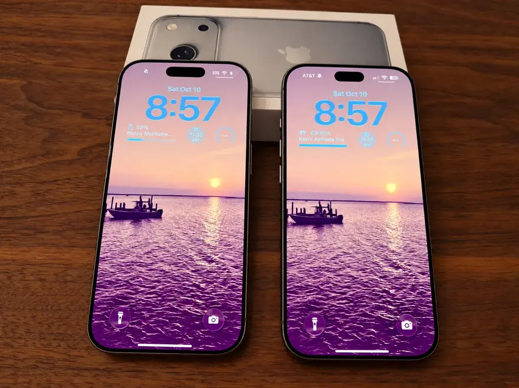
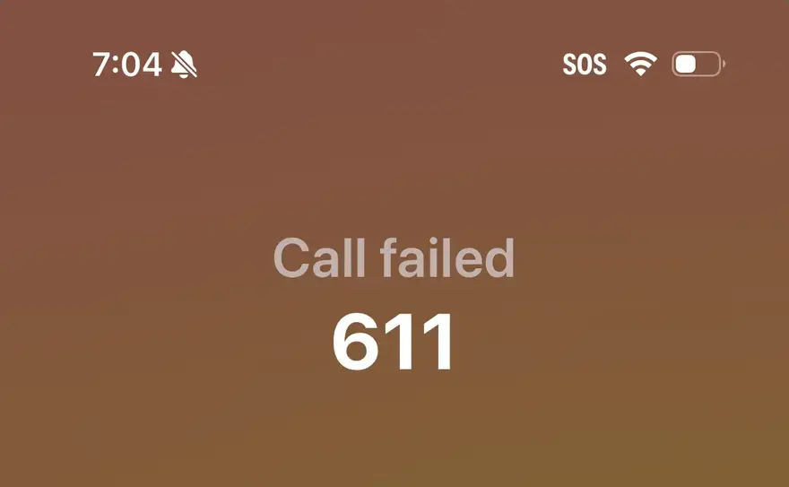
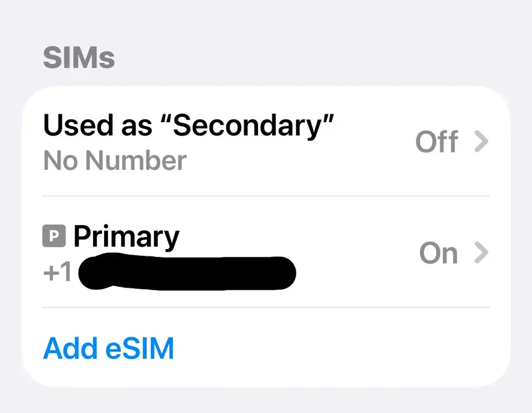

My iPhone 18 Pro Upgrade Failed. Then My Old Phone Lost Service Too.
I walked into an AT&T store with a working phone. After hours of troubleshooting, I left with no cellular service, a reported 48-hour account lock, and no explanation for how to get connected again.

On Friday, October 9, I walked into an AT&T store with a working iPhone 16 Pro and a brand-new iPhone 18 Pro.
More than two and a half hours later, I walked out with two phones and no working cellular service on either one.
My new phone wouldn’t activate. Worse, during AT&T’s attempts to fix the problem, my original phone lost service too.
It was the beginning of a long holiday weekend. I have kids with their own schedules, and like most families, we rely on our phones to coordinate plans and stay in touch.
What concerned me most wasn’t that the new phone wouldn’t activate. Technology fails sometimes.
It was that the activation process left me without service on my existing phone, and AT&T’s own specialists couldn’t restore it.
And when the problem unexpectedly resolved the following day, I still had no idea what had changed.
It started with three new iPhones
On Wednesday, October 7, I ordered three new iPhones through AT&T for my family.
They arrived Thursday, and my wife attempted to upgrade from her iPhone 16 to an iPhone 18 Pro.
The activation failed.
Fortunately, her old phone continued working. We decided to visit an AT&T store the next day rather than continue troubleshooting ourselves.
On Friday, October 9, the AT&T store in Watchung, New Jersey, eventually activated her new phone using a new eSIM.
Then we tried mine.
My upgrade made things worse
I was upgrading from an iPhone 16 Pro to an iPhone 18 Pro.
The initial activation failed. The store representative attempted alternative methods, including issuing new eSIMs.
Those attempts also failed.
During the troubleshooting, my original iPhone 16 Pro lost its cellular connection.
Now neither phone worked.
I couldn’t simply abandon the upgrade and return to my old device. I had walked into the store with working cellular service, and now I had none.
I later captured a screenshot showing my original iPhone displaying SOS and a failed attempt to call 611, AT&T’s support number.

Even AT&T’s specialists couldn’t restore service
The store representative genuinely tried to help.
He spent approximately two hours on the phone with AT&T’s specialist support team. We worked with an initial specialist, escalated to a supervisor, and eventually contacted AT&T’s Wireless Account Lock department.
I spoke directly with that department as well.
The explanation I received was that repeated activation attempts had triggered a 48-hour account restriction that nobody could override.
I asked about restoring service to my original iPhone rather than continuing with the upgrade.
That couldn’t be accomplished either.
After more than two and a half hours in the store, I left without working cellular service on either device.
I had no written technical explanation of what had happened, why the restriction existed, or why my previously working phone couldn’t be restored.
The employee said he’d seen similar problems
During the troubleshooting, the AT&T representative mentioned something that caught my attention.
He told me these activation problems seemed to be common.
He described helping another customer on a recent evening, spending approximately two hours troubleshooting and staying after the store closed. According to him, they still couldn’t resolve that customer’s issue.
I can’t verify how widespread these failures are, but his experience made me curious enough to look for other reports.
I found a September 19 discussion on Reddit in which another customer described an unsuccessful iPhone 18 Pro activation, loss of cellular service on both the old and new phones, and an initial estimate of 48–72 hours before the problem might be resolved.
That customer later reported that service returned after a few hours.
The similarities caught my attention, although I don’t know whether the underlying causes were the same.
The next day, my phone suddenly offered to activate
On Saturday, October 10, I checked my new iPhone 18 Pro several times throughout the day.
I wasn’t working with another support specialist or trying a new troubleshooting procedure. I was simply checking whether anything had changed.
Eventually, an option to activate cellular service appeared.
I selected it, and the activation succeeded.
That was it.
The previous day, AT&T representatives had told me a 48-hour restriction couldn’t be overridden. Yet my new phone became available for activation the following day.
I don’t know whether the restriction had been lifted, something changed within AT&T’s systems, or another process completed in the background.
Nobody had explained what changed.
And the successful activation didn’t quite mean the phone was working properly.
One more problem: Two SIM profiles
After activating my new iPhone 18 Pro, I still couldn’t make normal phone calls.
When I checked Settings → Cellular, I found two SIM profiles:
- Primary: Displayed my phone number and was enabled.
- Secondary: Displayed “No Number” and was also enabled.
I turned off the profile labeled “Secondary,” leaving my primary phone line enabled.
After making that change, I was able to make calls.
My wife experienced the same problem on her new iPhone 18 Pro. She also needed to disable an additional SIM profile before calling worked properly.

I don’t know whether these additional profiles were created during the unsuccessful activation attempts or whether they contributed to the original failures.
But it was another unexpected complication, affecting both of our new phones.
If someone else encounters a similar issue, checking which eSIM profiles are installed and which line is selected for calling may be useful. That doesn’t mean randomly disabling or deleting eSIMs is a universal solution. The correct configuration depends on the device and carrier account.
What I’d do differently before another upgrade
I’m comfortable troubleshooting technology, but this experience changed how I’ll approach future phone upgrades.
First, I’d make sure my family had a backup communication plan. That matters particularly when multiple devices on the same family account are being upgraded.
Second, I’d verify that everything works before considering an activation complete. That means testing outgoing calls, incoming calls, messages, and mobile data with Wi-Fi turned off.
Third, I’d check the phone’s cellular settings. Multiple eSIM profiles can complicate calling and data configuration, and the presence of an additional profile may not be obvious.
Finally, I’d be more cautious about repeated activation attempts. In my case, AT&T representatives said those attempts triggered a security restriction that prevented them from restoring service. I would want to understand that risk before continuing.
A working phone, but unanswered questions
As of October 10, my new iPhone 18 Pro has activated, and I can make phone calls after disabling the secondary SIM profile.
My wife’s new iPhone 18 Pro can also make calls after the same change.
We still haven’t attempted to activate my daughter’s new iPhone, the third device in our original order.
I’m relieved that both phones can now make calls. But several questions remain.
Why did my activation repeatedly fail? Why did my original iPhone lose service during troubleshooting? Why was I told the account was locked for 48 hours if activation became possible the next day? And why did both new phones require an additional SIM profile to be disabled before calling worked?
I don’t know whether this was an Apple issue, an AT&T provisioning issue, an account-security problem, or some combination of factors.
I’m not claiming there’s a widespread defect. I’m documenting what happened to my family.
Technology problems are inevitable. What matters is how companies help customers recover when things go wrong.
And that’s what continues to bother me about this experience.
If a customer tries to upgrade a working phone and the activation fails, shouldn’t there be a reliable way to restore service to the phone they already had?